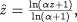
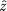
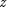
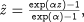

An easier (but less general) way to specify the grid nodes is by use of a tranformation. If the problem is expected to exhibit large gradients at the start of the domain, which reduce towards the end of the domain, a logarithmic transformation can be used to place more nodes near the lower bound of the domain. This can be represented by the following equation, the effect of which is illustrated in the figure below.

where  is the transformed coordinate and  the original coordinate. Below it can be seen that a uniform grid in the transformed domain leads to the desired non-uniform grid in the original domain.
Conversely, should one desire more grid points at the end of the domain, an exponential transformation may be used. The form of the transformation is:

To specify a transformed domain, enter the type of transformation with its parameter () in parentheses to the specification of the Distribution Domain. For the logarithmic transformation, with = 4, this would be specified as follows.
DISTRIBUTION_DOMAIN Axial AS [0 : ReactorLength] SET Axial := [CFDM, 2, 10, TRANSFORM(LOG, 4.0)] ;
Other numerical methods are specified in exactly the same way. A list of the available transformations, their keywords and arguments is given below.
| Domain transformation | Keyword | Parameter(s) |
|---|---|---|
| Logarithmic | TRANSFORM( LOG, ) | larger than or equal to zero |
| Exponential | TRANSFORM( EXP, ) | can take any real value |
Please note that for the exponential transormation a negative value will be the inverse transformation of the corresponding positive value.